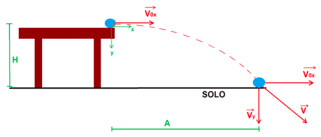

O que é Lançamento Horizontal na Física?
No lançamento horizontal, um objeto lançado horizontalmente executa um movimento curvilíneo, que é o resultado de dois movimentos: um na horizontal e outro na vertical.
Imagine uma bola de futebol que rola por uma mesa até cair no chão. No momento em que essa bola cai da mesa, ela executa uma trajetória curvilínea até tocar o solo. Esse tipo de movimento é denominado lançamento horizontal e ocorre quando o objeto, inicialmente com uma velocidade na horizontal, é lançado a determinada altura. Podemos concluir que ao abandonar a mesa, a bola inicia um movimento de queda livre por causa da ação da força da gravidade. Dessa forma, podemos concluir que um objeto lançado horizontalmente possui duas velocidades: uma orientada na horizontal e outra na vertical.
Agora vamos para a parte que realmente interessa, as fórmulas e equações utilizadas no lançamento horizontal. Observe que as equações que serão mostradas, são as mesmas aplicadas tanto para o MRU quanto para o MRUV.
Recomendo fortemente que, caso não tenha lido o conteúdo de MRU e MRUV, vá nos links acima e leia.
- H = altura final em metros
- g = gravidade
- t = tempo em segundos
- V0 = velocidade inicial em m/s
- S = posição final em metros
- S0 = posição inicial em metros
- V = velocidade em m/s
- A = alcance horizontal em metros
Equações do movimento na vertical:
- A função horária da posição S = S0 + V0x.t + a.t²/2
- H = 0 + g.t²/2
Equações do movimento na horizontal:
- Sx = Sox + V.t
- S-So = V.t ou (de forma mais simplificada) A = V.t